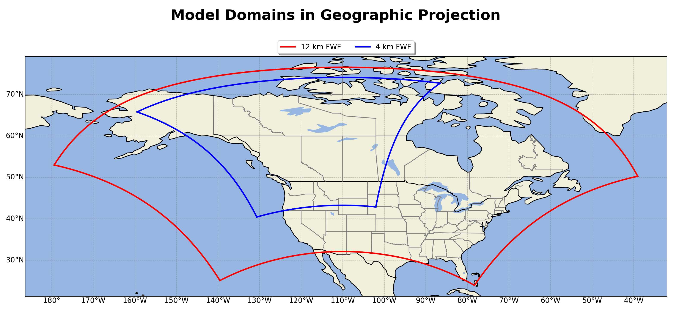

Datasets¶
The Datasets are divided up by their model domain
Model Domains¶
The FWF model resolves the FWI System/ FBP System in the D02 (12 km) and D03 (4 km) at 55 hour forecast horizon.

Description¶
For each domain there are two .nc (netcdf) files generated, four total datasets each day.
Domain: d02 (12 km)
fwf-hourly-d02-YYYYMMDDHH.ncFile Size: ~ 780M
File Dimensions: (time: 55, south_north: 417, west_east: 627)
fwf-daily-d02-YYYYMMDDHH.ncFile Size: ~ 16M
File Dimensions: (time: 2, south_north: 417, west_east: 627)
Domain: d03 (4 km)
fwf-hourly-d03-YYYYMMDDHH.ncFile Size: ~ 1.7G
File Dimensions: (time: 55, south_north: 840, west_east: 642)
fwf-daily-d03-YYYYMMDDHH.ncFile Size: ~ 30M
File Dimensions: (time: 2, south_north: 840, west_east: 642)
Dataset Variables¶
Regardless of Domain, each dataset hourly/daily contain the following variables.
Hourly Dataset fwf-hourly-<domain>-YYYYMMDDHH.nc |
Daily Dataset fwf-daily-<domain>--YYYYMMDDHH.nc |
|---|---|
| Time: Hourly UTC | Time: Noon Local for that Day |
| XLAT: Degrees Latitude | XLAT: Degrees Latitude |
| XLON: Degrees Longitude | XLON: Degrees Longitude |
| F: Fine Fuel Moisture Code | P: Duff Moisture Code |
| m_o: Fine Fuel Moisture Content | D: Drought Moisture Code |
| R: Initial Spread Index | U: Build Up Index |
| S: Fire Weather Index | T: 2 meter Temperature C |
| DSR: Daily Severity Rating | TD: 2 meter Dew Point Temperature C |
| FMC: Foliar Moisture Content % | H: 2 meter Relative Humdity % |
| SFC: Surface Fuel Consumption kg m^{-2} | W: 10 meter Wind Speed km/h |
| TFC: Total Fuel Consumption kg m^{-2} | WD: 10 meter Wind Direction deg |
| ROS: Rate of Spread m min^{-1} | r_o: Total Accumulated Precipitation mm |
| CFB: Crown Fraction Burned % | r_o_tomorrow: Carry Over Precipitation mm |
| HFI: Head Fire Intensity kW m^{-1} | SNOWC: Flag Inidicating Snow Cover (1 for Snow Cover) Snow Depth m |
| T: 2 meter Temperature C | |
| TD: 2 meter Dew Point Temperature C | |
| H: 2 meter Relative Humdity % | |
| W: 10 meter Wind Speed km/h | |
| WD: 10 meter Wind Direction deg | |
| U10: U Component of Wind at 10 meter m/s | |
| V10: V Component of Wind at 10 meter m/s | |
| r_o: Total Accumulated Precipitation mm | |
| r_o_hourly: Hourly Accumulated Precipitation mm | |
| SNW: Total Accumulated Snow cm | |
| SNOWH: Physical Snow Depth m | |
| SNOWC: Flag Indicating Snow Cover (1 for Snow Cover) Snow Depth m |
Working with¶
Suggest using xarray to open and work with data.
Code block shows an example of how to open and view
import numpy as np
import xarray as xr
forecast_date = "YYYYMMDDHH"
domain = 'd02' ## or 'd03'
name = 'daily' ## or 'hourly'
## file directory
file_dir = str(/path/to/dir/) + f"/fwf-{name}-{domain}-{forecast_date}.nc"
## open dataset
ds = xr.open_dataset(file_dir)
## chunk data to dask.arrays
ds = ds.chunk(chunks="auto")
ds = ds.unify_chunks()
# NOTE this is not needed. Arrays will be either numpy float32 or objects
## Example: look at variable P (Duff Moisture Code)
print(ds.P)
<xarray.DataArray 'P' (time: 2, south_north: 417, west_east: 627)>
dask.array<xarray-P, shape=(2, 417, 627), dtype=float32, chunksize=(1, 209, 314), chunktype=numpy.ndarray>
Coordinates:
Time (time) datetime64[ns] dask.array<chunksize=(2,), meta=np.ndarray>
XLAT (south_north, west_east) float32 dask.array<chunksize=(209, 314), meta=np.ndarray>
XLONG (south_north, west_east) float32 dask.array<chunksize=(209, 314), meta=np.ndarray>
XTIME (time) float32 dask.array<chunksize=(2,), meta=np.ndarray>
Dimensions without coordinates: time, south_north, west_east
Attributes:
FieldType: 104
MemoryOrder: XY
description: DUFF MOISTURE CODE
projection: PolarStereographic(stand_lon=-110.0, moad_cen_lat=53.25, tr...
stagger: